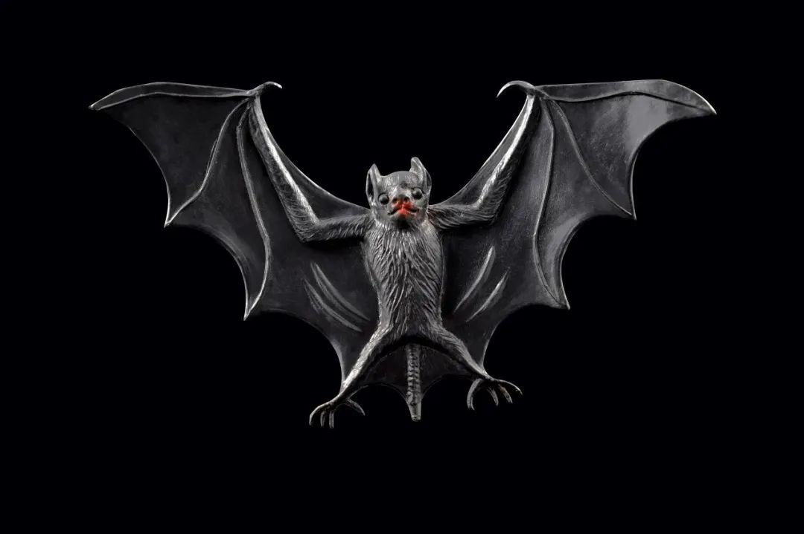

封面调查 | 致命野味，非法盗猎和买卖为何屡禁不止？
原文链接 备份链接 严峻的疫情再次表明， 推动《野生动物保护法》修订已刻不容缓 致命的野味 *本刊记者/黄孝光* 发于2020.2.10总第934期《中国新闻周刊》 2019年12月，野生动物保护志愿者刘懿丹接到爆料称，武汉华南海鲜市场贩 …
 史上最严禁“野”令，效果如何有待观察
史上最严禁“野”令，效果如何有待观察


2月24日下午，全国人大常委会表决通过关于全面禁止非法野生动物交易、革除滥食野生动物陋习、切实保障人民群众生命健康安全的决定（下称《决定》），自公布之日起施行。
北京大学保护生物学教授、自然保护与社会发展研究中心执行主任吕植对《中国慈善家》表示 ，“这相当于是一个紧急决定”。 鉴于全面修订野生动物保护法还需要一个过程，由全国人大常委会尽快通过一个专门决定十分必要。
在《野生动物保护法》修订前查漏补缺
此次通过的决定聚焦滥食野生动物的突出问题，目的就是要在相关法律修改之前，及时、明确全面禁止食用野生动物，严厉打击非法野生动物交易，为维护公共卫生安全和生态安全、保障人民群众生命健康安全提供有力的立法保障。
我国现行的《野生动物保护法》禁食的野生动物法律规范，仅限于国家重点保护野生动物和没有合法来源、未经检疫合格的其他保护类野生动物。
吕植介绍，该法案将野生动物分为三大类：一是国家重点保护野生动物，二是地方重点和“三有”动物（即具有生态价值、科学价值和社会价值的动物），也称非国家重点国家保护野生动物。其中，国家重点保护动物不允许食用，其他的则可以合法进入食品市场，前提是获得林业部门的捕捉、驯养、经营的许可，以及农业部门的检疫证明。第三类野生动物，即没在任何前述名单上的，进入市场和餐馆无需专门手续。
《决定》在《野生动物保护法》的基础上，以全面禁止食用野生动物为导向，扩大法律调整范围，确立了全面禁止食用野生动物的制度。
该决定明确规定，凡野生动物保护法和其他有关法律禁止猎捕、交易、运输、食用野生动物的，必须严格禁止。全面禁止食用国家保护的“有重要生态、科学、社会价值的陆生野生动物”以及其他陆生野生动物，包括人工繁育、人工饲养的陆生野生动物。全面禁止以食用为目的猎捕、交易、运输在野外环境自然生长繁殖的陆生野生动物。
专家建议设置可食用白名单
《决定》还规定了严厉惩治非法食用、交易野生动物的行为，堪称“史上最严”。
对违反野生动物保护法和其他有关法律规定，猎捕、交易、运输、食用野生动物的，在现行法律规定基础上加重处罚。对本决定增加的非法食用和以食用为目的猎捕、交易、运输野生动物的行为，参照适用《野生动物保护法》等法律关于同类违法行为的处罚规定进行处罚。
吕植认为，《决定》的作用也要拭目以待。2016年修订的《野生动物保护法》在执行中存在着执法不到位的地方，比如执法信息不透明，检疫、市场监管缺失等。
今年1月24日，吕植征集了19名来自全国高校、科研院所的学者、院士的联名签字，发布了《杜绝野生动物非法食用和交易，从源头控制重大公共健康危机》的倡议，并起草完成《从源头管理野生动物利用的具体建议》。
吕植称，目前的《野生动物保护法》从生态保护的角度提得比较多，但对公共安全的考虑不足。从公共安全的角度，立法应该规范所有的野生动物利用。
对于是否要全面禁止食用野生动物的社会争议，吕植认为反对者主要还是这个产业的利益相关者。“其实经过这次疫情之后，大多数人应该应该不会再吃野生动物了。这个市场必然会萎缩，从业者应该看到这个趋势。”
吕植的建议是，《野生动物保护法》修订首先从理念上转变，建立白名单制，就是所有陆生脊椎野生动物都应该纳入野保法管理范围不允许食用，此外建立可食用动物名录。这与现行法律是两种相反的思路。
“这么做的一个根本原因是出于公共安全的考虑，因为病原体挑宿主时，并不会看它是不是重点保护野生动物。”吕植说。
对养殖户适当补偿
在采访中，山水自然保护中心主任赵翔对《中国慈善家》表示，社会发展大方向肯定是禁食野生动物，但是对于《野生动物保护法》中的野生动物概念还要重新定义。目前深圳市的地方立法比较可取，具有参考意义。
根据《深圳特区全面禁止食用野生动物条例（草案）》，深圳将全面禁止食用野生动物。同时，条例也将制定颁布《深圳特区可食用动物名录》，并明确规定任何人不得食用或者组织食用《名录》以外的动物及制品。
依据该草案，《深圳特区可食用动物名录》包括人工饲养的陆地动物猪、牛、羊、驴、兔、鸡、鸭、鹅、鸽、鹌鹑和法律、法规未禁止食用的水生动物。全国人大通过的决定中也强调，鸽、兔等人工养殖、利用时间长、技术成熟，人民群众已广泛接受的人工饲养的动物属于家畜家禽，适用畜牧法的规定。
食用野生动物屡禁不止的背后，还存在着一个庞大的产业链。据统计，2017年，陆生野生动物繁育与利用业的林产总值已达到560.351亿元。
吕植称，对于全面禁止食用野生动物，民间有较大共识。目前反对的声音主要来自野生动物贸易的从业者和相关利益群体。“产业发展这么多年，背后有着盘根错节的利益链条。对于养殖户，尤其是一些贫困地区的农民群体其利益也可能受到影响，应扶持他们转型。”吕植表示。
吕植建议，全面禁食野生动物后，针对养殖户的损失，可以效仿1998年国家停止天然林采伐后，政府以不同方式给予补贴扶持的方式解决。
值班编辑：冯超
推荐阅读
▼


原文链接 备份链接 严峻的疫情再次表明， 推动《野生动物保护法》修订已刻不容缓 致命的野味 *本刊记者/黄孝光* 发于2020.2.10总第934期《中国新闻周刊》 2019年12月，野生动物保护志愿者刘懿丹接到爆料称，武汉华南海鲜市场贩 …
原文链接 备份链接 28.01.2020本文字数：2678，阅读时长大约4分钟 导读：随着新型冠状病毒的溯源工作的开展，华南海鲜市场几乎被锁定为疫情的源头，尽管该市场关闭前所销售的野生动物目前的去向我们不得而知，武汉官方也未做任何披露。 …
原文链接 备份链接 非典疫情以来，科学界和动物保护领域都在呼吁禁止野生动物交易，但以“野味”为代表，近年来交易渠道反而越来越广，从活鲜、农批市场扩大到快手、火山等网络平台，多种野生动物都有从捕猎、运输到贩卖的成熟利益网。问题出在哪里？如何 …
原文链接 备份链接 面临的最大挑战仍然是部门利益藩篱疫情当前之际，2月10日，全国人大常委会法工委表示，已部署启动《野生动物保护法》（下称《野保法》）修改工作，拟增加列入全国人大常委会今年的立法工作计划，并加快动物防疫法等法律的修改进 …
原文链接 备份链接 新冠疫情形势严峻，但非常重要的病毒溯源仍不清晰。 世卫组织的疫情报告显示，越来越多的证据表明，新型冠状病毒与其他已知的在蝙蝠中传播的冠状病毒存在关联，更具体地讲则是和蝙蝠的菊头蝠科存在关联。菊头蝠在中国南方以及整个亚 …